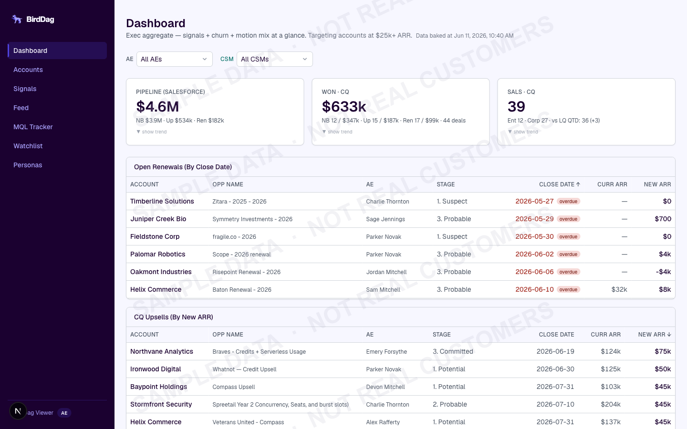
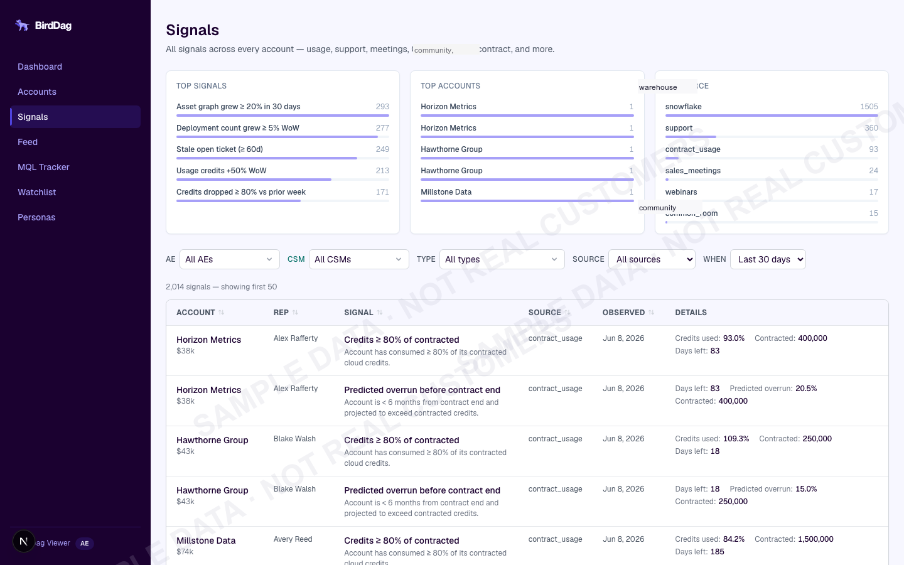
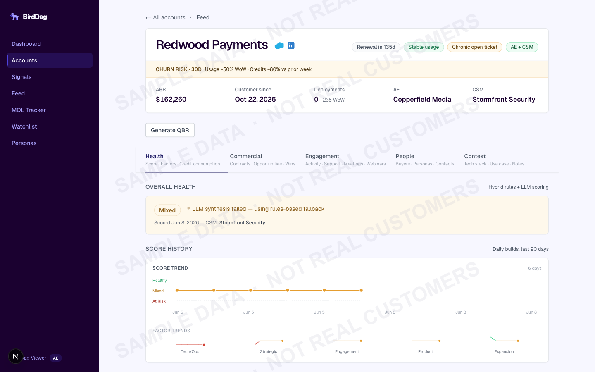
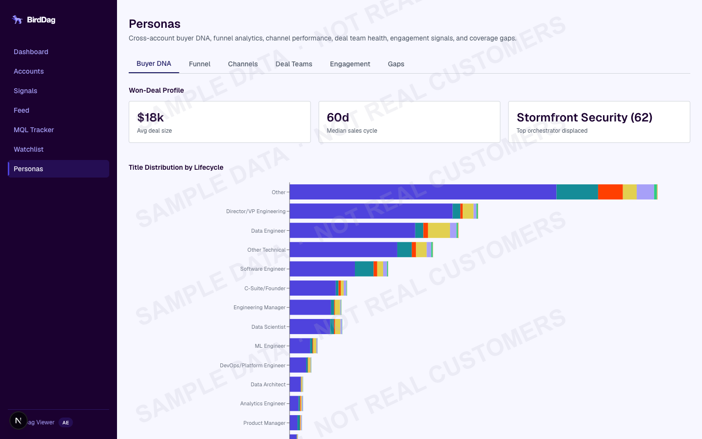

I built the system that tells our sales team which customers to call, why, and what to say. It scores the full book of business on multi-cadence schedules using LLM-powered signals and costs about eight cents per scoring run.
The company had a growing book of business and no way to tell which accounts were expanding, which were about to churn, and which ones had a real upsell play. AEs were running ad-hoc queries and checking dashboards manually. Some weren't checking at all.
The data existed. Product usage, consumption metrics, support tickets, meeting cadence, webinar attendance, community activity. All of it sat across 20+ tables in the data warehouse. The problem wasn't missing data. It was that nobody had time to pull it all together, score it, and figure out what to do about it every week.
There was a legacy internal tool that tried to do this. It was broken. I replaced it.
Bird Dag runs a multi-cadence bake pipeline — hourly data refresh, periodic LLM scoring — that pulls from the data warehouse, scores everything, and pushes the results to a dashboard and Slack. Here's what comes out the other end.
30+ signal types evaluated against every account. Usage growth WoW, consumption rate changes, support spikes, deployment changes, contract thresholds, meeting cadence, webinar engagement, community activity. Each one gets a severity (P0/P1/P2) and a label: expansion, churn, or mixed.
An LLM looks at each account's signals and classifies it into an expansion motion with a predicted ARR delta and confidence score. The whole thing costs about $0.08 for the entire book of business because I built a token budget system that caps spending per run.
Multiple factors across product usage, technical health, strategic alignment, engagement, and expansion path. Some are rules-based. Others are LLM-evaluated. And then there are hard overrides, because a statistical model doesn't know that "this company is being acquired" means throw out every other signal.
Multiple views into the buying committee: who's the champion, who's the decision maker, where are the coverage gaps, which contacts have gone stale. All baked in one pass from CRM and community platform data.
Monday morning, every AE gets a DM with their accounts that fired P0 or P1 signals. Each message has the signal context, the recommended play, and the predicted ARR delta. P2 signals go to a shared channel. No login required. If you don't open the dashboard all week, you still know what's happening.
Hit a button, get a Quarterly Business Review with health scores, contact roster, usage metrics, and top signals. Generates a shareable link the AE can send to the customer directly. No login on the customer's end. PDF export via server-side rendering if they need a file.
Screenshots use anonymized sample data. All company names, people, and figures are fictional.




This was the decision that shaped the whole system. Warehouse queries run hourly in a fast bake CronJob. LLM scoring, persona analysis, and other expensive jobs run on daily or weekly cadences. The output is a JSON blob that gets pushed to object storage.
At runtime, the app just reads from object storage. No database queries for the main views. No API calls. Pages load fast. Costs are fixed. If the storage layer goes down, the app serves stale data from disk instead of crashing.
Core data refreshes every hour. LLM scoring and persona jobs run less frequently because the signals they evaluate don't change that fast. AEs get fresh data throughout the day, plus a Monday morning Slack brief.
Next.js, React, TypeScript (strict), Tailwind, Recharts
Next.js API routes, ORM, PostgreSQL, object storage with ISR cache
Custom TypeScript ETL, data warehouse SDK, 50+ warehouse queries across 30 data modules
LLM API with cloud provider fallback, token budgets, prompt caching
Docker multi-stage, managed Kubernetes, GitOps, zero-trust networking
Vitest, 580+ tests, in-memory DB for integration tests
The naive version of this would send every account's full context to an LLM and let it score. That would cost hundreds of dollars per run. Not viable for a recurring job.
I built a token budget system. Each run gets a hard cap. The shared context (pricing tiers, product catalog) is identical across all accounts, so it goes in a cached prompt block. The per-account cost is just the variable data. If the budget runs out mid-run, it stops cleanly and reports which accounts got scored and which didn't.
There's also a fallback path. Primary is the LLM provider's API directly. If that's down, it switches to a cloud provider's managed inference endpoint. Same model, different auth path. I've never actually needed the fallback in production, but it's there.
Early versions had a problem: if an account's usage was growing 60% WoW for three weeks straight, the AE got three identical alerts. That's noise, not signal. They started ignoring everything.
I added firing granularity controls. Some signals fire daily, some weekly. Usage growth fires once per week, period. If the trend continues, it doesn't re-alert. Definitions are versioned with supersede chains, so when I change a threshold from 50% to 25%, historical data doesn't break and the same event doesn't trigger twice under different versions.
There's also a minimum signal threshold. An account has to fire at least 2 signals before it becomes an opportunity. Single-signal flares created too many false positives.
The health score model has multiple factors. Some are rules-based (product usage, technical health). Others are LLM-evaluated (strategic alignment, engagement sentiment, expansion path). On paper, it works.
In practice, the model kept rating accounts as "green" when anyone on the sales team could tell you they were about to churn. A customer near their usage ceiling with 30 days to renewal isn't healthy. A company in the middle of an acquisition isn't stable. So I added hard overrides. Domain-specific rules that force a Red rating regardless of what the computed factors say. Circuit breakers. This is the part of the system I'm most proud of, because it's where the engineering meets actual sales knowledge.
Every account gets its own detail page, pre-rendered at build time. That's a lot of pages with charts, timelines, signal histories, and persona breakdowns. The default Node heap size can't handle it. I had to significantly increase it for the SSG pass.
The Docker build is a multi-stage setup. First stage builds with the fat heap. Second stage runs a minimal image with a headless browser for PDF export. I had to explicitly exclude build artifacts from the runtime bundle or the image ballooned.
A signal that says "usage grew 60% WoW" is accurate but not useful. An AE can't walk into a call with that. So every signal carries a "why" payload: which specific behaviors changed, what new activity appeared, how consumption shifted. The AE opens their Monday DM and has a concrete talking point, not a dashboard link they have to interpret. This was a product decision more than an engineering one, but it shaped how the whole bake pipeline works because the payloads have to be assembled from the same warehouse queries at build time.
Before Bird Dag, the process was: AE opens the data warehouse, writes a query (or asks someone to), stares at numbers, decides whether to act. Most weeks, they didn't bother.
Now every AE gets a Slack DM on Monday with their accounts that need attention, ranked by severity, with specific talking points. The dashboard exists for people who want to dig deeper, but the Slack delivery is the real product.
Serves the full AE/CSM org. Not a prototype. Production system behind zero-trust networking.
QBR generation went from a multi-hour manual exercise to one click. Shareable link, no customer login needed.
LLM costs stayed at $0.08 per scoring run. That's scoring every active account, classifying expansion motions, and computing health factors.
580+ tests. Not because I love testing, but because the signal logic has edge cases that will absolutely bite you if you don't cover them.
Next.js frontend, API routes, Postgres, object storage caching, PDF generation
50+ warehouse queries across 30 data modules, 20+ warehouse tables, multi-cadence ETL
Cost-controlled inference, prompt caching, dual backends, token budgets
Bake-time/runtime split, cache invalidation, signal versioning, cost predictability
Managed Kubernetes, Docker multi-stage, GitOps, zero-trust ingress
Health scores, expansion motions, persona taxonomies, signal versioning with supersede chains